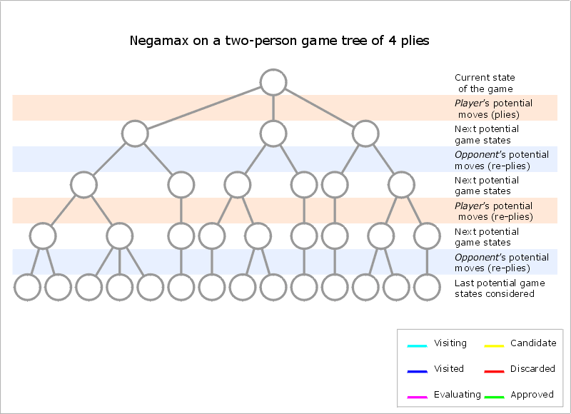
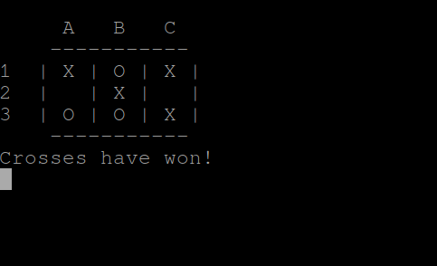

A alluringly simple game of Noughts and Crosses - or tic-tac-toe depending on where you come from - is a solved game. It is never possible to lose and the best you can play is a draw, except where your opponent or you blunders which seems to be more common than you may think.
A strong solution to noughts-and-crosses can be easily coded, given the lack of complexity in the game. The upper bound of the game tree is only 3⁹ (19,683). This number drops even further because of early terminations, where a winner is already found before all 9 boxes are filled, and invalid moves such as all X's resulting in an upper bound of only 5,478, this number drops even further when rotations and reflections are taken into account.
Additionally, the branching factor is also important to look at: in chess there are on average 31 possible moves for each state but in our noughts and crosses game the number is only 4 (9//2). The resultant game state is really small and makes the game ideal for AI's to solve.
This means the game is also trivial for humans because you can afford to look over 3 moves ahead with pruning, where some game tree branches are immediately rejected because they lead to immediate loss.
To start with i instantiate the board and create functions directly
relating to the current state of the board. The most important function to
take note of here is the evaluate(board) function, which
negates the score depending on the side to play. i.e. when white is to
play and has won, a score of 1 is returned, but when white is won and
black is to play, a negated score of -1 is returned instead and vice
versa. For draws a value of 0 is returned.
board = [[" ", " ", " "] for i in range(3)]
def crosses_to_move(board):
noughts = sum(row.count("O") for row in board)
crosses = sum(row.count("X") for row in board)
return crosses = noughts
def is_there_three_in_a_row(board, symbol):
for row in board:
if row[0] == row[1] == row[2] == symbol:
return True
for column in range(len(board)):
if board[0][column] == board[1][column] == board[2][column] == symbol:
return True
if board[0][0] == board[1][1] == board[2][2] == symbol:
return True
if board[0][2] == board[1][1] == board[2][0] == symbol:
return True
return False
def have_noughts_won(board):
return is_there_three_in_a_row(board, "O")
def have_crosses_won(board):
return is_there_three_in_a_row(board, "X")
def is_draw(board):
if have_crosses_won(board) or have_noughts_won(board):
return False
for row in board:
if " " in row:
return False
return True
def game_ended(board):
if have_crosses_won(board) or have_noughts_won(board) or is_draw(board):
return True
return False
def evaluate(board):
multiplier = 1 if crosses_to_move(board) else -1
if game_ended(board):
if have_crosses_won(board):
return 1 * multiplier
elif have_noughts_won(board):
return -1 * multiplier
else:
return 0
raise TypeError("Only call this function when the game has ended.")
Now that i have board representation the next step is to create the search
algorithim. Here i will use
negamax search, where
each player maximises their expected gains at each stage - taking into
account that in noughts and crosses your gains are my loss so the sign is
flipped in each stage. i.e. Pick the best move which is the move that
harms my opponent the most. This is not unlike the
evaluation(board) function above.
For further reading by people more experienced at communication than i am, see this post by Esther where she dives into the basics of minimax search. After this you should be able to realise that negamax search is simply minimax search but with sign reversal instead of minimising.
For my negamax search i took a code extract from the chess programming wiki's negamax page and adapted it to my own needs. The function returns the best_move as a tuple (row, column) which is not (y, x).
from math import inf
def get_all_child_moves(board):
for row in range(3):
for column in range(3):
if board[row][column] == " ":
yield row, column
def unmake_move(board, move):
move_row, move_column = move
board[move_row][move_column] = " "
def negamax(board, starting=True):
if game_ended(board):
return evaluate(board)
max_score = -inf
best_move = None
for move in get_all_child_moves(board):
make_move(board, move)
score = -negamax(board, starting=False)
unmake_move(board, move)
if score > max_score:
max_score = score
best_move = move
if starting:
return best_move
return max_score
In just under a hundred lines of code, we already have a fully functional game. We can make moves, unmake moves and even find the best move using negamax search. Hopefully you can see the actual search itself is very small with the most lines of code so far going towards finding out the state of the game.
For our user interface, i defined the following 3 functions. A function to
test if a move was valid to avoid an invalid board state. Additionally, i
needed to be able to generate a random move for the AI to play to keep it
interesting. The function
return_list_of_won_squares(board) is used to highlight the
squares that are won for the graphical user interface.
from random import randint, choice
from noughts_and_crosses import is_draw, game_ended
def is_move_valid(board, move):
return board[move[0]][move[1]] == " "
def generate_random_move(board):
possible_moves = []
for i in range(3):
for j in range(3):
move = (i, j)
if is_move_valid(board, move):
possible_moves.append(move)
return choice(possible_moves)
def return_list_of_won_squares(board):
if not game_ended(board):
return []
if is_draw(board):
return []
for i, row in enumerate(board):
if row[0] == row[1] == row[2]:
return [(i, 0), (i, 1), (i, 2)]
for column in range(len(board)):
if board[0][column] == board[1][column] == board[2][column]:
return [(0, i), (1, i), (2, i)]
if board[0][0] == board[1][1] == board[2][2]:
return [(0, 0), (1, 1), (2, 2)]
if board[0][2] == board[1][1] == board[2][0]:
return [(0, 2), (1, 1), (2, 0)]
return False
Now with both the board logic coded and helper functions, i started to code up the interactive game itself. There were several features i really wanted in my game but most of all, i tried to make it look good.
I made the decision for the AI to go first, while it would certainly not be difficult to add an option to reverse the roles, or even to let the AI play against itself, both options which i had done in testing - i felt it was out of scope for this very small game which was mainly focused on minimax search with a game we all love and enjoy.
from noughts_and_crosses import (
get_all_child_moves,
evaluate,
make_move,
unmake_move,
crosses_to_move,
have_crosses_won,
have_noughts_won,
game_ended,
negamax,
)
from util import generate_random_move, is_move_valid
import signal
from string import ascii_uppercase
from time import sleep
def clear_screen():
print("\x1Bc")
def print_board(board):
print(" A B C")
print(" -----------")
for i, row in enumerate(board):
print(i + 1, " |", " | ".join(row), "|")
print(" -----------")
def user_input_helper():
user_input = input("Enter a move or type EXIT to exit: ")
user_input = user_input.upper()
if user_input == "EXIT":
clear_screen()
disable_alternate_text_buffer()
exit()
move_column = ascii_uppercase.find(user_input[0])
move_row = int(user_input[1]) - 1
return (move_row, move_column)
def get_user_input(board):
while True:
move = user_input_helper()
if is_move_valid(board, move):
return move
print("That was an invalid move")
sleep(1)
clear_screen()
print_board(board)
def enable_alternate_text_buffer():
print("\x1B[?1049h")
def disable_alternate_text_buffer():
print("\x1B[?1049l")
def game_loop(board):
print_board(board)
while not game_ended(board):
user_move = get_user_input(board)
make_move(board, user_move)
clear_screen()
print_board(board)
if game_ended(board):
return
print("The AI is thinking...")
best_move = negamax(board)
make_move(board, best_move)
clear_screen()
print_board(board)
def show_message(board):
if not game_ended(board):
print("The game is still ongoing.")
return
if have_crosses_won(board):
print("Crosses have won!")
elif have_noughts_won(board):
print("Noughts have won!")
else:
print("The game ended in a draw.")
def main():
board = [[" ", " ", " "] for i in range(3)]
move = generate_random_move(board)
make_move(board, move)
enable_alternate_text_buffer()
game_loop(board)
show_message(board)
sleep(4)
clear_screen()
disable_alternate_text_buffer()
def signal_handler(sig, frame):
print("Program shutting down.")
print("Restoring original environment...")
clear_screen()
disable_alternate_text_buffer()
exit()
if __name__ == "__main__":
signal.signal(signal.SIGINT, signal_handler)
main()
This yielded me a very pretty command line user interface and as the AI generated a random move each time the program is called - it added much needed variety to the game. This was the best addition because it got boring after each day of testing!
The next step i took was to make it graphical. Typing our coordinates by hand was rather motonomous so i wrote the following pygame code to improve my own experience with it!
from noughts_and_crosses import (
get_all_child_moves,
evaluate,
make_move,
unmake_move,
crosses_to_move,
have_crosses_won,
have_noughts_won,
game_ended,
negamax,
)
from util import is_move_valid, return_list_of_won_squares, generate_random_move
import pygame
WIDTH = 720
HEIGHT = 720
LINE_THICKNESS = 2
FPS = 30
FONT_SIZE = 150
def draw_symbol_on_grid(window, center, symbol):
font = pygame.font.SysFont("monospace", FONT_SIZE)
COLOR = "RED" if symbol == "X" else "BLUE"
label = font.render(symbol, True, COLOR)
screen.blit(label, (center))
def draw_and_update_grid(window, board):
CELL_WIDTH = WIDTH // 3
CELL_HEIGHT = HEIGHT // 3
rects = [[" ", " ", " "] for i in range(3)]
for row in range(3):
for column in range(3):
rect = pygame.Rect(
column * CELL_WIDTH, row * CELL_HEIGHT, CELL_WIDTH, CELL_HEIGHT
)
rects[row][column] = rect
if (
rect.collidepoint(pygame.mouse.get_pos())
and board[column][row] == " "
and not game_ended(board)
) or ((column, row) in return_list_of_won_squares(board)):
pygame.draw.rect(window, "grey", rect)
else:
pygame.draw.rect(window, "white", rect)
pygame.draw.rect(window, "black", rect, LINE_THICKNESS)
for i in range(3):
for j in range(3):
center_x = i * CELL_WIDTH + CELL_WIDTH // 2
center_y = j * CELL_HEIGHT + CELL_HEIGHT // 2
symbol = board[i][j]
draw_symbol_on_grid(
window, (center_x - FONT_SIZE // 3.5, center_y - FONT_SIZE // 2), symbol
)
return rects
def game_loop(screen, clock, board):
screen.fill("white")
rects = draw_and_update_grid(screen, board)
pygame.display.flip()
clock.tick(FPS)
for event in pygame.event.get():
if event.type == pygame.QUIT:
exit()
if event.type == pygame.MOUSEBUTTONUP:
pos = pygame.mouse.get_pos()
for i, row in enumerate(rects):
for j, rect in enumerate(row):
if rect.collidepoint(pos):
move = j, i
if is_move_valid(board, move) and not game_ended(board):
make_move(board, move)
if crosses_to_move(board) and not game_ended(board):
best_move = negamax(board)
make_move(board, best_move)
if __name__ == "__main__":
pygame.init()
pygame.display.set_caption("Noughts and Crosses")
screen = pygame.display.set_mode((WIDTH, HEIGHT))
clock = pygame.time.Clock()
board = [[" ", " ", " "] for i in range(3)]
move = generate_random_move(board)
make_move(board, move)
while True:
game_loop(screen, clock, board)
pygame.quit()
The main features in the graphical game was highlighting squares captured in the example above, i also added highlight on hover which made it feel far more interactive command to the terminal based version.
The ironic thing being that the graphical interface was easier to do than the command line interface and in fewer lines of code as well! This was due to having to do more io compared to the graphical interface such as but not including handling SIGTERM signals manually, using the alternate text buffer with ANSI escape sequences , pretty printing and error catching.
We started off by exploring minimax search in the context of noughts and crosses. In just over 100 lines of code, we explored how it was possible to get down all the logic for solving the game. Using this foundation, i made a small command line interface for the AI, this was satisfactory but after that i decided to make a graphical interface which turned out to be more than i could have expected!
If this gains any traction there are so many more future plans such as adding AI against AI play, pretty printing (color), two players and more optimisations! The historical code listing for this can be found here with the main branch here.